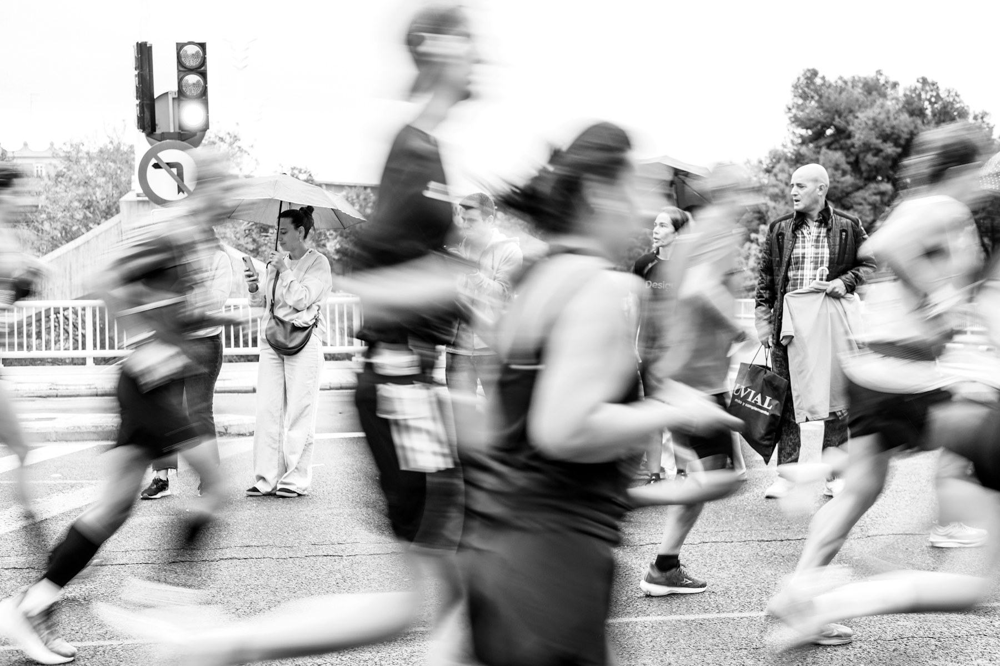

号码布 / RACE BIB01
10KM
A 1048
2026.10.18深圳湾 · 深圳 / SHENZHEN BAY
概念赛事 / DEMO

CITY NIGHT RUN 202605K · 10K
让城市的夜，跟上你的心跳。
选择路线，先看照明、坡度与补给；再完成分区报名，领取你的数字号码布。
Photo: Unsplash · 概念配图，不代表该摄影对象参与本赛事
01 / IDENTITY IN MOTION
折线路径来自街区转向与跑步节奏。信号黄负责发现，珊瑚红只标记终点、结果与高优先提醒。
10KM
A 1048
补给站 02HYDRATION · 400M

 FINISH / 10K00:47:26
FINISH / 10K00:47:26城市有脉搏，
今晚是我的。
02 / ROUTE DECISION
两条概念路线共享起终点。距离不是唯一差异，坡度、暗区与补给间隔同样影响选择。
地点、路线与安全信息均为概念演示，不可用于导航或真实赛事决策。
03 / ENTER THE LINE
概念报名不收款、不上传数据。所填内容只保存在当前浏览器页面中，重置即可清除。
报名已完成 / ENTRY CONFIRMED
数字号码布仅供本概念案例展示。真实赛事需完成身份、健康与支付流程。
05K
B 1048
FINISH / 5K深圳 · 2026.10.18
00:24:18模拟完赛 / DEMO FINISH
5K 完赛结果为模拟数据，仅用于展示赛事品牌与产品闭环。
KEEP THE LINE.路线要清楚，反馈要及时，品牌才有资格被记住。
回到顶部